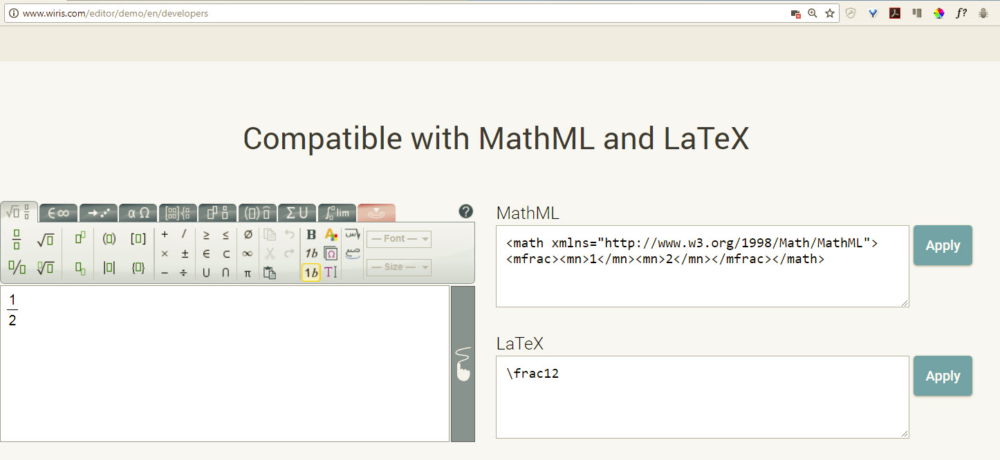

Accessible Content Creation in Math and Chemistry
Create accessible documents and content that can be easily edited in Brightspace (D2L) and can be read by screenreaders.
\[x=\frac{-b\pm\sqrt{b^2-4ac}}{2a}\]
MarkDown is a text-to-HTML conversion tool. MarkDown allows you to write using an easy-to read, easy-to-write plain text format, then converts it to structurally valid XHTML (or HTML). -daringfireball.net
# This is a Heading 1
## Lists (this is a heading 2)
* Item 1 with *Italics*
* Item 2 with **Bold**
* Sub-item 1
* Item 3
This is a link to Google:
[Google Search](google.com)
This is an image:

Markdown is plain-text: margins, tab stops, page breaks, extra spacing, and formatting are all unsupported, ignored and therefore dropped. This is limiting but also helpful with accessibility.
Multiple spaces, or line breaks in a markdown file are ignored when converted to an HTML document. A Word document copied into a markdown editor is stripped of all formatting and flourishes.
Formatting and styles can be added once we have an HTML file, but Markdown lets you focus on content first.
Right click on the math formula to see more options.
\[\int_0^3\left(\frac{x^3}4-2x^2-e^x\right)dx\]
Listen to the Jaws screenreader process the above formula:
The above formula is written using tex or latex code. \int_0^3\left(\frac{x^3}4-2x^2-e^x\right)dx
Don't worry we don't need to learn tex code!
To edit and create our formulas we use the Wiris editor. This can also be used to copy equations that were previously made in MS Word using third-party plugins. Once we use the editor we have the tex code to paste into our markdown file.
<script type="text/javascript" src="https://cdnjs.cloudflare.com/ajax/libs/mathjax/2.7.1/MathJax.js?config=TeX-MML-AM_HTMLorMML"></script>